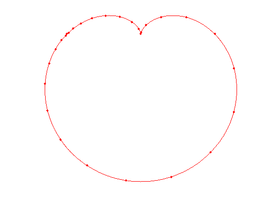
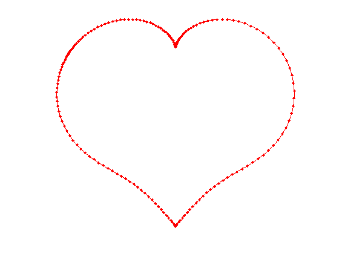

Happy Valentines Day!
Anonymous, 14th February 2012
(Chebfun example fun/ValentinesDay.m)
Happy Valentine's Day to all Chebfun users!
t = chebfun('t',[-pi pi]); x = 16*sin(t).^3; y = 13*cos(t)-5*cos(2*t)-2*cos(3*t)-1*cos(4*t); fill(x,y,'.-r'); axis equal hold on plot(12.5*scribble('Happy Valentine''s Day!'),'k') hold off axis equal off
This 'heart curve' can be found on Wolfram's MathWorld site [1], where they compute its area. We do the same, and compare the result:
z = x+1i*y; A = abs(sum(x.*diff(y))) err = A - 180*pi
A =
5.654866776461628e+02
err =
0
Here are some more heart curves that can be found in [1]:
Heart eqn 1
t = chebfun('t',[-pi pi]); r = 1-sin(t); [x1 y1] = pol2cart(t,r); plot(x1,y1,'.-r') axis equal off A1 = abs(sum(x1.*diff(y1))) err = A1-3*pi/2 % Note, this is A2 on [1]!
A1 =
4.712388980384689
err =
-8.881784197001252e-16
 Heart eqn 5
t = chebfun('t',[-pi pi]); r = 2 - 2*sin(t)+sin(t).*sqrt(abs(cos(t))+.1)./(sin(t)+1.4); [x5 y5] = pol2cart(t,r); plot(x5,y5,'.-r') axis equal off A5 = abs(sum(x5.*diff(y5))) % Note, different from [1] was we include .1 in sqrt
A5 = 11.645555308722983
References [1] http://mathworld.wolfram.com/HeartCurve.html